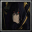

Player profile
aka[bosssu]
Rank #24server.eurobattle.netSeason 2
Most played · 仮面ライダーエボルブラックホールフォーム
Matches113 wins · 8 losses
Win rate27%
Avg K / D / A30.3 / 32.4 / 10.0
Avg APM108
Avg damage dealt223.5k
Avg damage taken130.5k
Heroes played
Explore heroes →| HERO | MATCHES | WIN RATE | AVG K / D / A | AVG DMG |
|---|---|---|---|---|
仮面ライダーエボルブラックホールフォームMost played | 3 | 67% | 26.7 / 25.7 / 10.3 | 183.6k |
Gundam Exia Repair IV | 1 | 100% | 40.0 / 38.0 / 12.0 | 292.8k |
ヤト,ヤボク | 1 | 0% | 24.0 / 33.0 / 8.0 | 187.4k |
イレイナ | 1 | 0% | 37.0 / 44.0 / 9.0 | 260.8k |
Spider-Man | 1 | 0% | 29.0 / 25.0 / 6.0 | 258.2k |
 Shadow | 1 | 0% | 27.0 / 36.0 / 6.0 | 213.5k |
ミサカ ミコト | 1 | 0% | 38.0 / 35.0 / 12.0 | 238.4k |
仮面ライダータイクーン | 1 | 0% | 24.0 / 37.0 / 15.0 | 186.7k |
朝田 詩乃 | 1 | 0% | 34.0 / 31.0 / 11.0 | 269.4k |
Averages use recorded statistics only; unavailable historical values are shown as —.
Recent matches
Open a match for its scoreboard and kill matchups.
WIN55:44
MCB #2000214
07 Nov 2026 · 22:20 WIB
28.0 / 28.0 / 11.0View match →
LOSS53:59
MCB #2000211
07 Nov 2026 · 04:25 WIB
24.0 / 33.0 / 8.0View match →
LOSS67:10
MCB #2000207
05 Nov 2026 · 23:10 WIB
37.0 / 44.0 / 9.0View match →
LOSS59:20
MCB #2000206
05 Nov 2026 · 21:04 WIB
29.0 / 25.0 / 6.0View match →
LOSS63:42
MCB #2000204
04 Nov 2026 · 21:34 WIB
27.0 / 36.0 / 6.0View match →
LOSS61:01
MCB #2000203
04 Nov 2026 · 20:18 WIB
38.0 / 35.0 / 12.0View match →
LOSS57:26
MCB #2000198
02 Nov 2026 · 21:06 WIB
24.0 / 37.0 / 15.0View match →
LOSS60:41
MCB #2000197
02 Nov 2026 · 20:03 WIB
34.0 / 31.0 / 11.0View match →
WIN61:29
MCB #2000196
02 Nov 2026 · 18:50 WIB
44.0 / 38.0 / 17.0View match →
WIN67:41
MCB #2000191
01 Nov 2026 · 19:43 WIB
40.0 / 38.0 / 12.0View match →